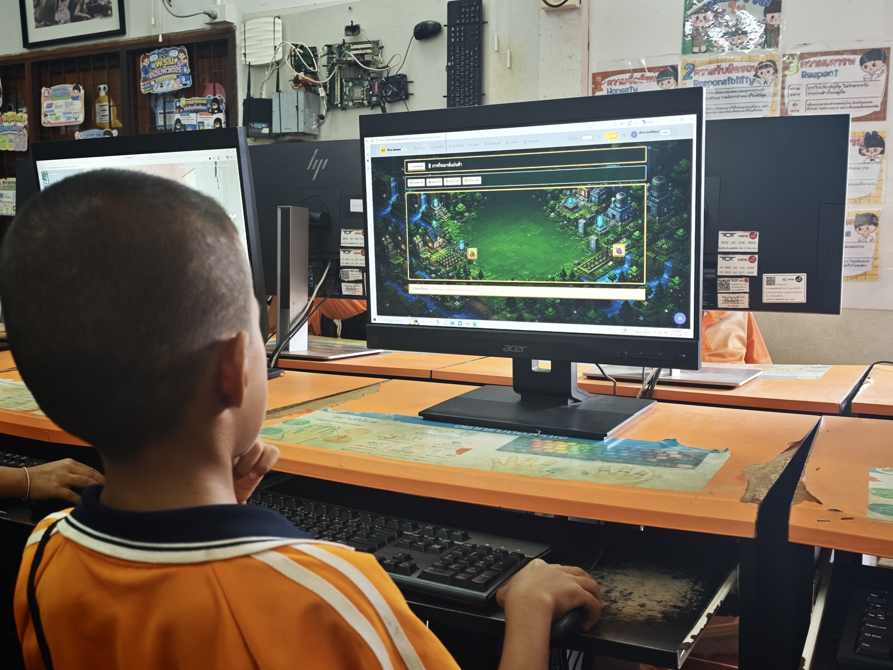
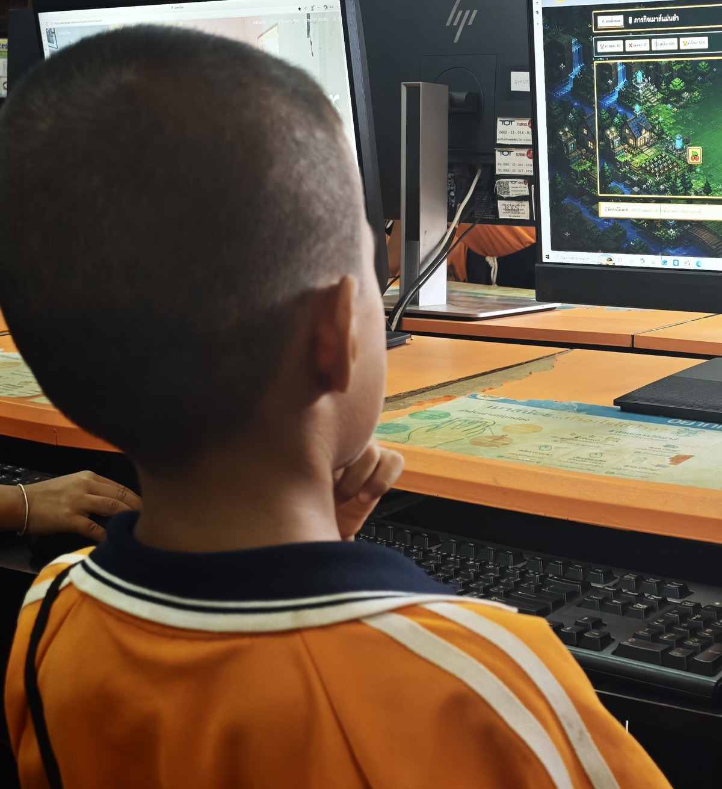
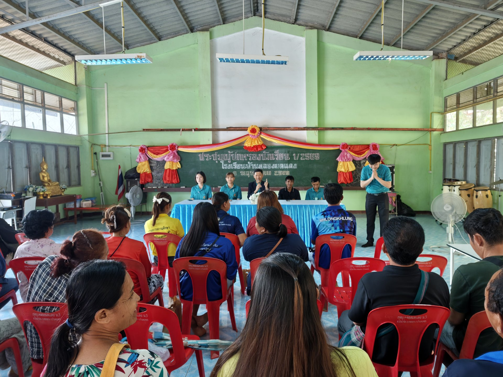
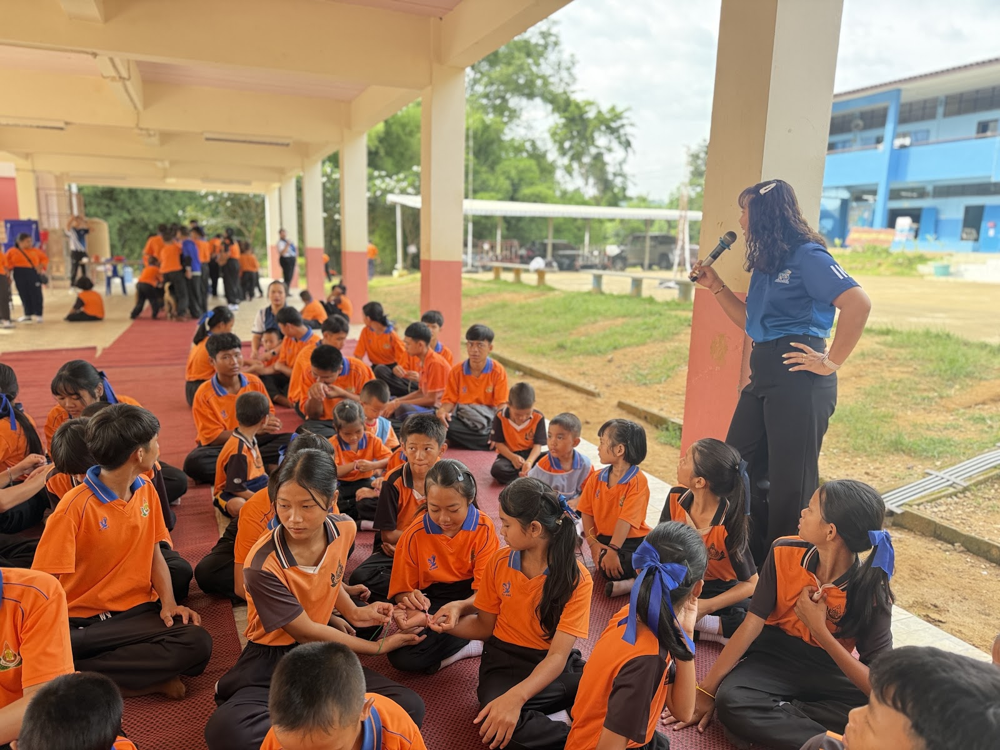
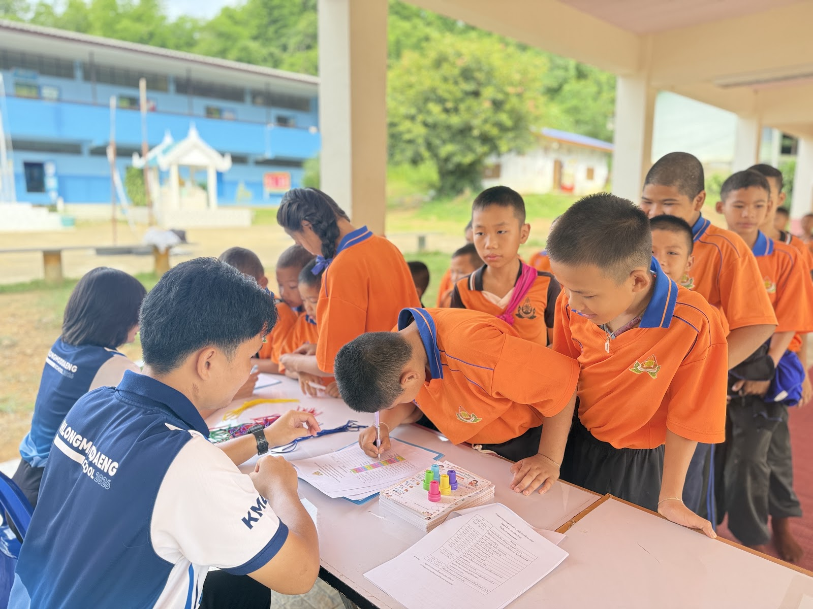
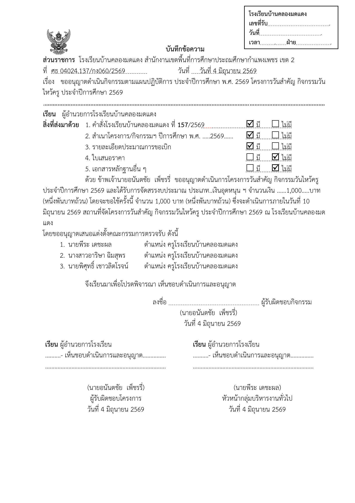
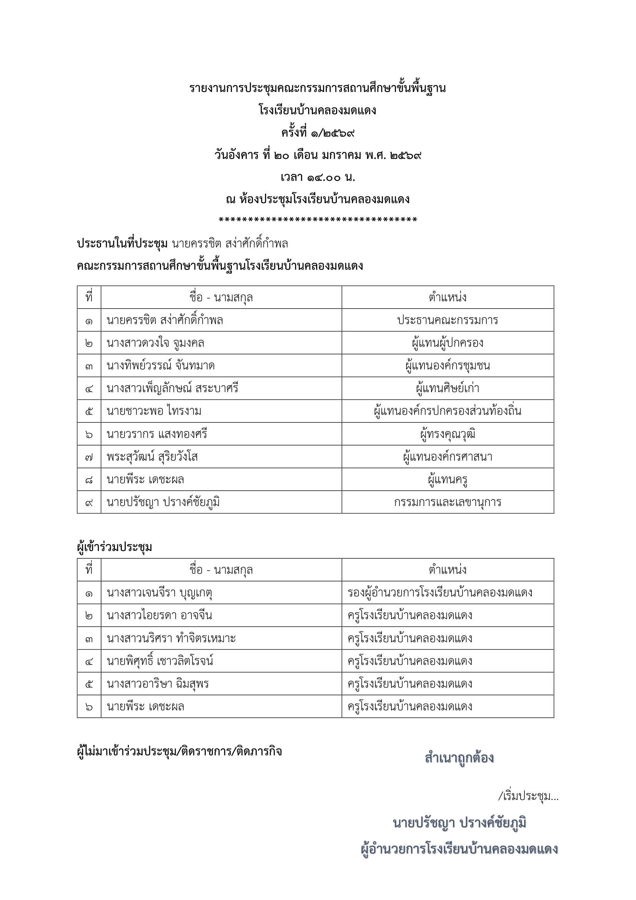
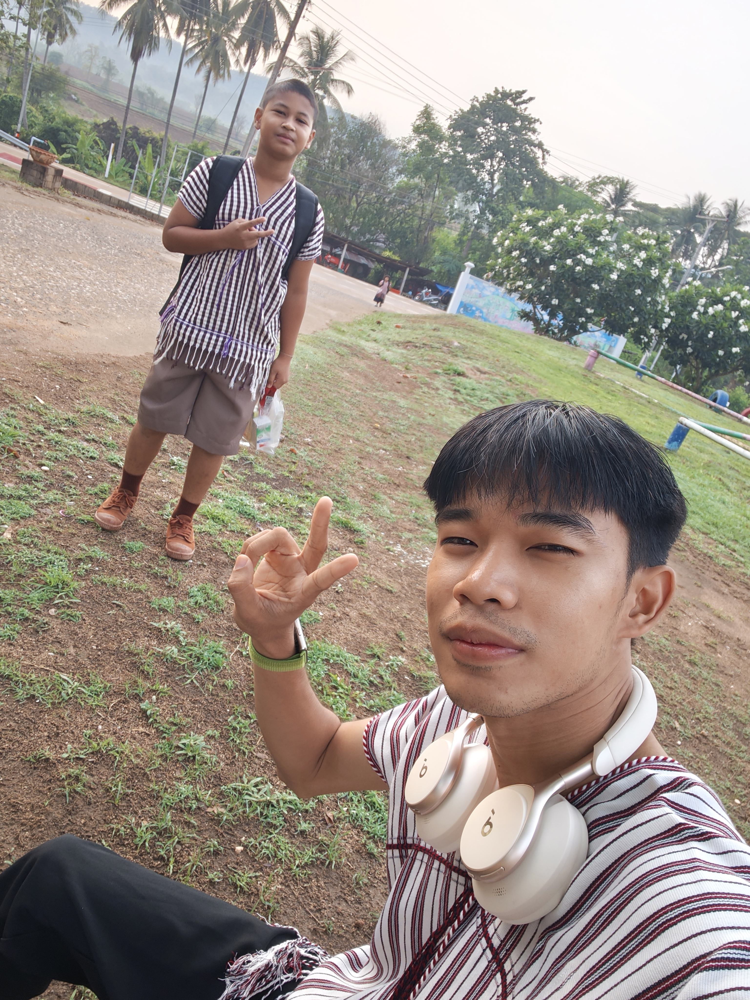
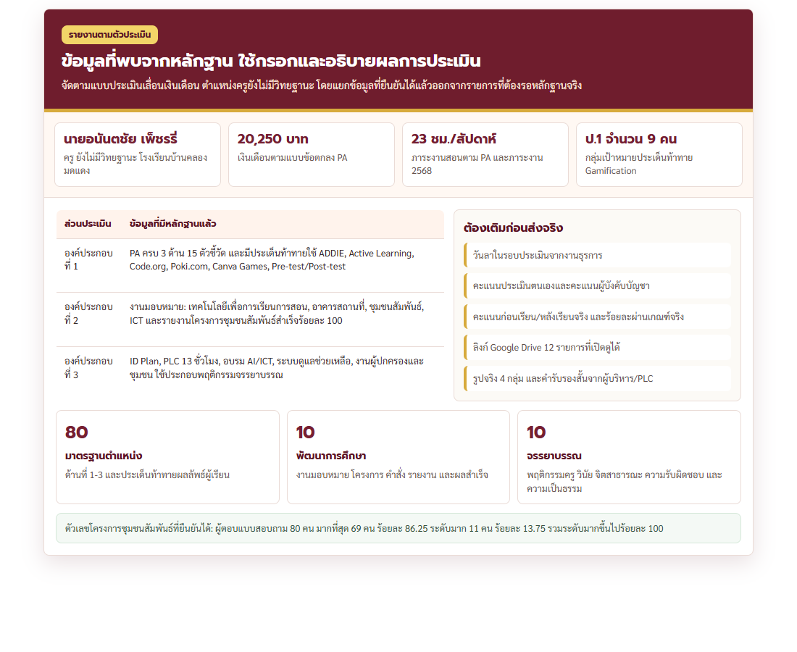

การประเมินผลการพัฒนางาน
ตามข้อตกลงในการพัฒนางาน (PA)
กลุ่มสาระการเรียนรู้วิทยาศาสตร์และเทคโนโลยี และการงานอาชีพ
โรงเรียนบ้านคลองมดแดง สพป.กำแพงเพชร เขต 2 สพฐ. กระทรวงศึกษาธิการ
คณะกรรมการประเมินผลการพัฒนางาน (PA):
• นายปรัชญา ปรางค์ชัยภูมิ (ผอ.โรงเรียนบ้านคลองมดแดง / ประธานกรรมการ)
• ครูตรัสมา ปัญญาญาณ (ครู โรงเรียนบ้านคลองมดแดงสาขาบ้านใหม่ชุมนุมไทร / กรรมการประเมิน)
• ครูชญานี ดวงต๋า (ครู โรงเรียนบ้านคลองมดแดงสาขาบ้านใหม่ชุมนุมไทร / กรรมการประเมิน)





ประวัติส่วนตัว วุฒิการศึกษา และเส้นทางชีวิตราชการ


ภาระงานสอนตามตารางสอน รวม 25 คาบ/สัปดาห์
| รหัสวิชา | ชื่อรายวิชา | ระดับชั้น | ชม./สัปดาห์ | สถานที่จัดการเรียนรู้ |
|---|---|---|---|---|
| ว11102 / ว12102 | วิทยาการคำนวณ (เน้นทักษะเมาส์และ Unplugged Coding) | ป.1 – ป.2 | 3 | ห้องปฏิบัติการคอมพิวเตอร์ |
| ว14102 / ว15102 | วิทยาการคำนวณ (การใช้ซอฟต์แวร์พื้นฐานและอัลกอริทึม) | ป.4 – ป.5 | 2 | ห้องปฏิบัติการคอมพิวเตอร์ |
| ว14101 / ว15101 | วิทยาศาสตร์พื้นฐาน (กระบวนการทางวิทยาศาสตร์) | ป.4 – ป.5 | 4 | ห้องเรียนสามัญ / ห้องวิทย์ |
| ว21102 / ว22102 / ว23102 | วิทยาการคำนวณและการออกแบบเทคโนโลยี | ม.1 – ม.3 | 3 | ห้องปฏิบัติการคอมพิวเตอร์ |
| ง21101 / ง23101 / ง23102 | ทักษะอาชีพและการงานอาชีพ (สบู่/คอมพิวเตอร์) | ม.1 – ม.3 | 6 | โรงฝึกงาน / แปลงเกษตร |
| - | กิจกรรมซ่อมเสริมคอมพิวเตอร์และวิชาการ | ป.6 และ ม.3 | 2 | ห้องปฏิบัติการคอมพิวเตอร์ |
| กพ13901 - 03 | กิจกรรมพัฒนาผู้เรียน: ลูกเสือ, ชุมนุมเปตอง, แนะแนว, คุณธรรม | ป.1 – ม.3 | 3 | ลานกิจกรรม / หน้าเสาธง |
📸 ภาพบรรยากาศการจัดการเรียนรู้จริง 3 ระดับชั้น


ด้านที่ 1 : การจัดการเรียนรู้ (ครบถ้วนทั้ง 8 ตัวชี้วัด)
สร้างและพัฒนาหลักสูตร
จัดทำหน่วยการเรียนรู้วิทยาการคำนวณ ว 4.2 และหน่วยบูรณาการทักษะอาชีพตามบริบทคลองมดแดง
ออกแบบการจัดการเรียนรู้
ใช้เทคนิคสอน Active Learning 15 รูปแบบ ทั้งเกม สถานการณ์จำลอง โครงงาน และคอมพิวเตอร์ช่วยสอน
จัดกิจกรรมการเรียนรู้
เน้นลงมือปฏิบัติจริง มีแผนการสอนและบันทึกหลังสอนครบถ้วน นำผลมาพัฒนาผู้เรียนต่อเนื่อง
สร้างสื่อ/นวัตกรรม 62 ชิ้น
ผลิตสื่อ 62 ชิ้น ทั้งบัตรคำ Scratch, แบบจำลองฮาร์ดแวร์, Code.org, Poki, Canva และ Quizizz
วัดและประเมินผลการเรียนรู้
ประเมินครบ 3 ด้าน K-P-A ด้วย Pre/Post-test แบบสังเกต และระบบตรวจผลออนไลน์ทันที
ศึกษา วิเคราะห์ เพื่อแก้ปัญหา
ทำวิจัยชั้นเรียนแก้ปัญหาทักษะการใช้เมาส์ ป.1 จำนวน 11 คน ด้วยกระบวนการ ADDIE Model
จัดบรรยากาศส่งเสริมผู้เรียน
จัดห้องคอมฯ อบอุ่น มีป้ายนิเทศ สื่อแขวนข้อตกลง กิจกรรมกลุ่ม และทัศนศึกษารวม 7 กิจกรรม
อบรมคุณลักษณะ & วันไหว้ครู
ผู้รับผิดชอบจัดกิจกรรมวันไหว้ครู 2569 ปลูกฝังความกตัญญู วินัย และคุณลักษณะอันพึงประสงค์ 100%
📸 หลักฐานเชิงประจักษ์ด้านการจัดการเรียนรู้ (4 มิติ)


ด้านที่ 2 และด้านที่ 3 (ครบ 7 ตัวชี้วัด)


รางวัลการแข่งขันและเกียรติบัตรระดับเขตพื้นที่
| วันที่ได้รับ | รายการรางวัล / เกียรติบัตร | หน่วยงานที่จัด | ระดับรางวัล / บทบาท |
|---|---|---|---|
| ๗ ส.ค. ๒๕๖๙ | รางวัลชนะเลิศระดับเหรียญทอง การแข่งขัน "The School CEO : คลิปสั้นปั้นธุรกิจ" (เสน่ห์ผ้าทอปกาเกอะญอ) | สพป.กำแพงเพชร เขต ๒ | ระดับเขตพื้นที่การศึกษา |
| ปีการศึกษา ๒๕๖๙ | รางวัลเหรียญทอง Science Show ป.๔-ป.๖ งานศิลปหัตถกรรมนักเรียน ครั้งที่ ๗๔ (ครูผู้ฝึกซ้อม) | กลุ่ม รร.คลองสวนหมาก | ระดับกลุ่มโรงเรียน |
| ปีงบประมาณ ๒๕๖๙ | รางวัลรองชนะเลิศอันดับ ๒ (คุณภาพดีเยี่ยม) ประกวดภาพถ่ายต่อต้านการทุจริต "ราคาของการถูกลืม" | สพป.กำแพงเพชร เขต ๒ | ระดับเขตพื้นที่การศึกษา |
| ๓๐–๓๑ พ.ค. ๒๕๖๙ | อบรมเชิงปฏิบัติการสร้างเว็บไซต์โดเมน .th สำหรับสถานศึกษา (.sch.th) | มูลนิธิ THNIC ร่วมกับ สพป.กพ.๒ | ระดับประเทศ / เขตพื้นที่ |
📸 คลังภาพเกียรติบัตรและหลักฐานรางวัลจริง (รอบปีประเมิน ๒๕๖๙)


ภาพกิจกรรมและการมีส่วนร่วมพัฒนาการศึกษา



โครงสร้างการประเมินเลื่อนเงินเดือนตามเกณฑ์ ก.ค.ศ. (ว23/2564)
| องค์ประกอบการประเมิน | คะแนนเต็ม | หลักฐานเชิงประจักษ์รองรับ | สถานะ |
|---|---|---|---|
| 1.1 มาตรฐานตำแหน่ง (15 ตัวชี้วัด 3 ด้าน) | 60 | แผนการสอน, สื่อ 62 ชิ้น, เยี่ยมบ้าน 100%, ID Plan อบรม 179+ ชม., PLC 13 ชม. | ระดับ 4 |
| 1.2 ข้อตกลง PA (ประเด็นท้าทาย ป.1) | 20 | Gamification ป.1 ADDIE Model ผลลัพธ์รูบริกส์ 4 ทักษะ ผ่านเกณฑ์ 11/11 คน (100%) | สำเร็จ 100% |
| 2. การมีส่วนร่วมพัฒนาการศึกษา | 10 | ประธานสัมพันธ์ชุมชน (สำเร็จ 100%), หัวหน้างาน ICT, ครูเวรประจำวัน | ระดับ 5 |
| 3. วินัย คุณธรรม และจรรยาบรรณ | 10 | ไม่เคยถูกลงโทษทางวินัย, ไม่เคยมาสาย, ลาป่วย 1 ครั้ง ลากิจ 1 ครั้ง, ผู้กำกับลูกเสือ | เต็ม 10 |
| คะแนนรวมทั้งสิ้น | 100 | มีร่องรอยและเอกสารราชการรองรับครบถ้วนสมบูรณ์ 100% | พร้อมรับการตรวจ |
